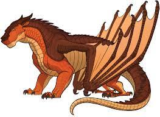
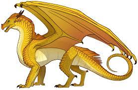
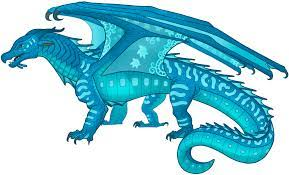
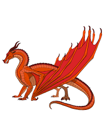
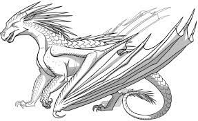
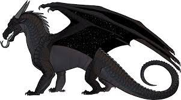
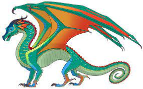
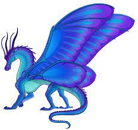
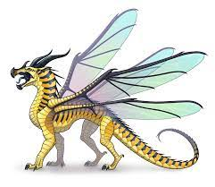

Description: thick, armored brown scales, sometimes with amber and gold
under scale; large, flat heads with nostrils on top of snout
Abilitiees: Can breathe fire (if warm enough), hold their breath for up
to an hour, blend into large mud puddles; usually very strong
Queen: Queen Moorhen

SandWing
Descripton: pale gold or white scales the color of the desert sand;
poisonous barbed tail; forked black tongues
Abilities: can survive a long time without water, poison enemies
with the tips of their tails like scorpions, bury themselves for
camoflauge in the desert sand, breath
Queen: Since the death of Queen Oasis, the tribe is split
between three rivals for the throne: Burn, Blister, and Blaze

SeaWing
Description: blue or green or aquamarine scales; webs between their
claws; gills on their necks; glow-in-the-dark stripes on their tales/
snouts/underbellies
Abilities: can breath underwater, see in the dark, create huge waves
with one splash from their powerful tails; excellent swimmers
Queen: Queen Coral

SkyWing
Descripton: red-gold or orange scales; enormous Wing
Abilities: powerful fighter and fliers, can breath fire
Queen: Queen Scarlet

IceWing
Description: silvery scales like the moon or pale
blue like ice; rigid claws to grip the ice; forked blue
tongues; tails narrow to a whip-thin end
Abilities: can withstand subzero temperatures and
bright light, exhale a deadly freezing breathe
Queen: Queen Glacier

NightWing
Descripton: purple-ish black scales and scattered silver scales on the underside of their
wings, like a night sky full of stars; forked black tongues
Abilities: can breath fire, disappear into dark shadows, read minds, fortell
the furture
Queen: a closely guarded secret

RainWing
Descripton: scales constantly shift colors, usually bright like birds of
paradise; prehensile tails
Abilities: can camoflauge their scales to blend into their surroundings,
use their prehensile tails for climbing; no known natural wepeons
Queen: Queen Dazzaling

SilkWing
Description: SilkWing dragonets are born wingless, but go through a metamorphosis
at age six, when they develop four huge wings and silk-spinning abilities; as
beautiful and gentle as butterflies, with scales in any color under the sun,
except black.
Abilities: can spin silk from glands on their wrists to create webs or other
woven articles; can detect vibrations with their antennae to assess threats.
Queen: Queen Wasp (the last SilkWing queen, before the Tree Wars, was
Queen Monarch)

HiveWings
Description: red, yellow, and/or orange, but always mixed with some black
scales, four wings.
Abilities: vary from dragon to dragon; examples include deadly stingers
that can extend from their wrists to stab their enemies; venom in their
teeth or claws; a paralyzing toxin that can immobilize their prey; or
boiling acid sprayed from a stinger on their tails
Queen: Queen Wasp

LeafWings
Despription: wiped out during the Tree Wars with the HiveWings, but while
they lived, this tribe had green and brown scales and wings shaped lile leaves
Abilities: could absorb energy from sunlight and were accomplished
gardeners; some were rumored to have unusual control over plants
last known queen of the LeafWings was Queen Sequoia, about fifty
years ago, at the time of the Tree Wars